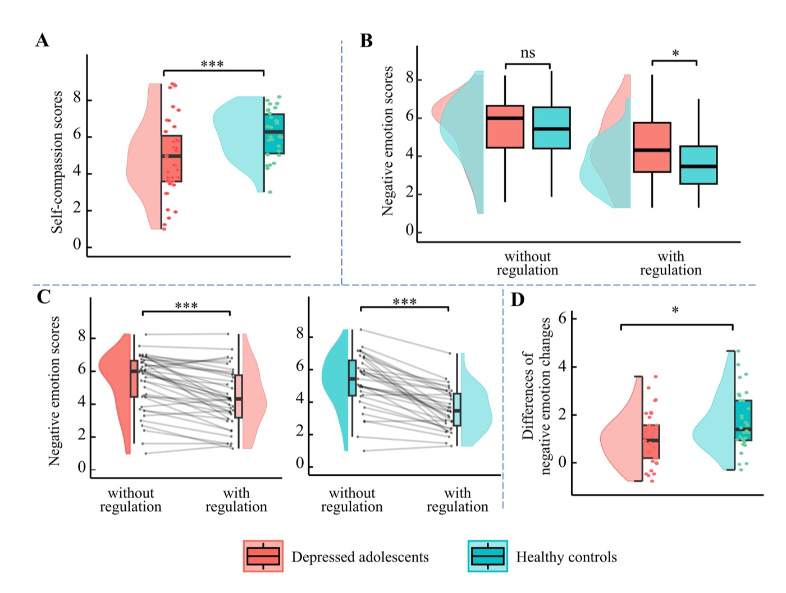
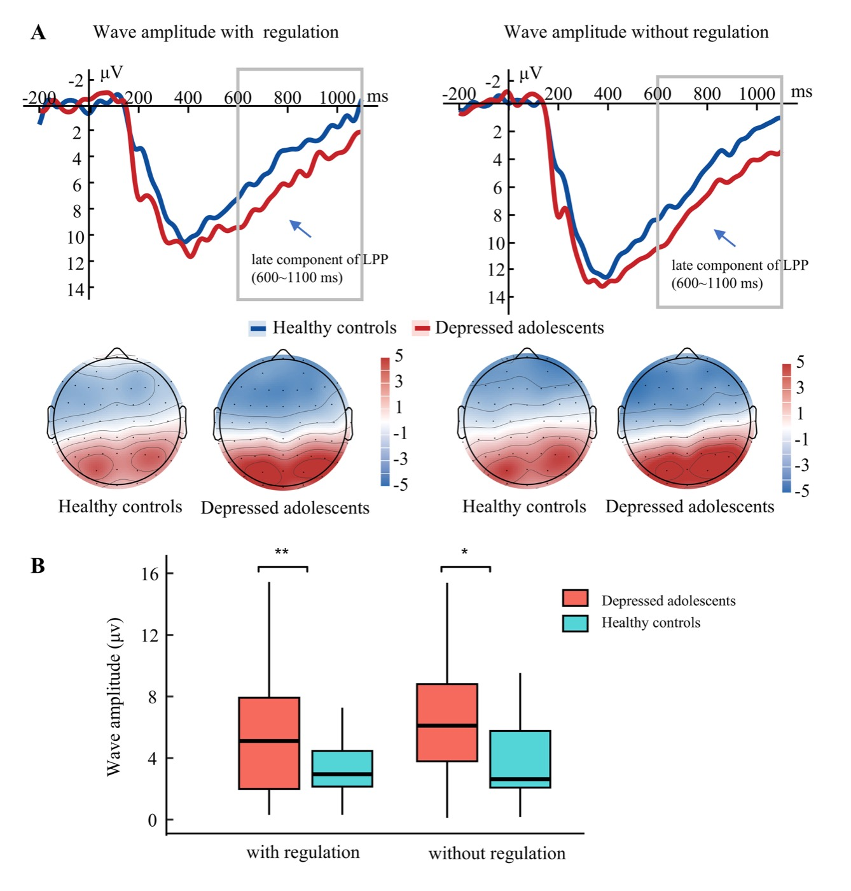
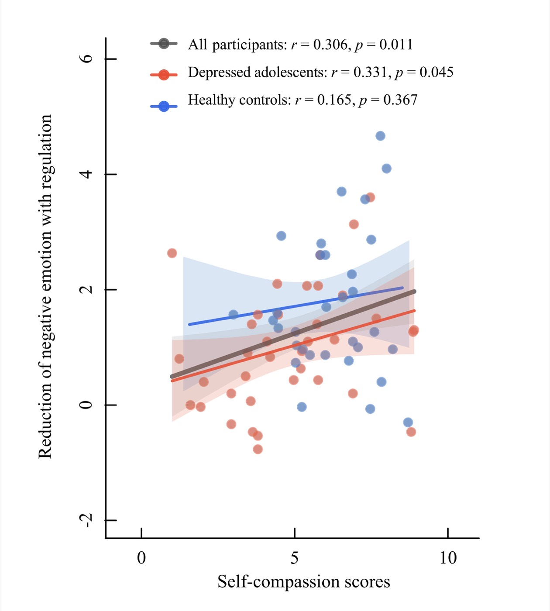

Hi, I'm Huijing Sun
M.Ed. student in Mental Health Education, Shandong Normal University
About Me

Hi, everyone! I'm a final-year master's student in Mental Health Education at Shandong Normal University, focusing on adolescent mental health. My research combines large-scale longitudinal data and EEG to understand how psychological difficulties develop during adolescence and the neural mechanisms behind them.
I've also been involved in TMS research on adolescent depression and spent a semester teaching at a secondary school, which strengthened my interest in connecting research with the real challenges young people face.
Outside of research, I'm a big fan of arthouse films, making things by hand, and wildlife — especially wild brown bears. I love learning about and observing them, and I'm also interested in their conservation.
Education
- 2024.09 – 2027.06 (expected) M.Ed. in Mental Health Education Shandong Normal University · Advisor: Prof. Kangcheng Wang
- 2019.09 – 2023.06 B.A. in Documentary Directing Shandong University of Arts
TOEFL iBT · 2026.08.19 Overall 5.5/6 · Reading 6 · Listening 5 · Speaking 5 · Writing 5
Research
Dynamics of adolescent mental health
How psychological difficulties interact and evolve over time, modeled with multi-wave cohort data and temporal network analysis.
Electrophysiological markers
Resting-state and task-based EEG signatures that distinguish at-risk adolescents and track change across development.
Intervention and response prediction
Whether TMS shifts symptom structure, and which baseline features predict who benefits from it.
Research & Internship Experience
- 2024.07 – Present Shandong Adolescent Neuroimaging Database (SAND) Data collection across modalities — structural MRI, fMRI, cognitive assessments, and questionnaires.
- 2025.02 – 2026.06 iTBS Treatment for Adolescent Depression Data collection, processing, and analysis.
- 2025.12 – 2026.03 fNIRS Study of Parent–Adolescent Communication Data collection.
- 2025.09 – 2025.12 Intern Psychology Teacher (Intern) · Jinan Foreign Language School Taught mental health lessons, facilitated group counseling activities, and conducted individual student interviews.
Publications
Under Review 2
-
Neural mechanisms of impaired self-compassion in depressed
adolescents during social exclusion.
Under review Preprint →
Task design
2 blocks × 30 trialsClick through one trial, or switch condition to see what changes. Block order was counterbalanced across participants. Before the task, each participant wrote three self-compassionate sentences of their own. Exclusion images came from the Image Database of Social Inclusion and Exclusion in Young Asian Adults; the frame above is a schematic, not a task image. Results

Behavioural results. (A) Adolescents with depression reported lower self-compassion than controls (t = 3.43, p < .001). (B) Without regulation the groups did not differ in negative emotion (t = 0.57, p = .570); with regulation they did (t = 2.54, p = .013). (C) Regulation reduced negative emotion in both groups. (D) That reduction was smaller in the depressed group (t = 2.53, p = .014). 
Late positive potential. (A) Grand-average waveforms at PO3, POz and PO4 with the 600–1100 ms window shaded — note that positive is plotted downward, so the lower red trace is the larger response. (B) LPP amplitude by group and condition. A 2 × 2 repeated-measures ANOVA found a main effect of group (F(1, 49) = 10.10, p = .003, η² = .17) but no effect of regulation (F(1, 49) = 1.97, p = .167) and no interaction (F(1, 49) = 0.56, p = .459). The group difference held both with regulation (t = 2.68, p = .011) and without (t = 3.10, p = .003). 
Self-compassion and the regulation effect. Partial correlations controlling for age and sex: all participants r = .306, p = .011; depressed adolescents r = .331, p = .045; healthy controls r = .165, p = .367. Abstract
Background: Self-compassion has shown to be an effective emotion regulation strategy, but its neural mechanisms remain understudied in adolescents with depression who suffer from social exclusion. This study employed event-related potentials to investigate the psychophysiological mechanisms underlying impaired self-compassion in adolescents with depression during social exclusion.
Methods: Thirty-seven adolescents with major depressive disorder (age = 16.46 ± 2.02) and thirty-two demographically matched healthy controls (age = 16.54 ± 2.29) completed a social exclusion scenario imagination task. This task presented participants with social exclusion scenarios, asking them to imagine themselves as the excluded individual and subsequently rate their negative emotions. The regulation session required participants to use self-compassionate statements to regulate their emotional responses while imagining and rate how much self-compassion they have engaged in; the non-regulation required them not to use those statements and rate their negative emotions immediately following imagination. EEG signals were recorded during the task, and the late positive potential (LPP) was analyzed to examine the neural responses associated with self-compassion regulation following social exclusion.
Results: Compared with the non-regulation condition, both groups showed less negative emotion during the self-compassion regulation condition. Adolescents with depression exhibited significantly lower self-compassion ratings than healthy controls, and showed a significantly smaller decrease in negative emotions. Higher self-compassion ratings were correlated with greater emotion regulation effect, particularly in adolescents with depression. Furthermore, LPP amplitudes were significantly higher in adolescents with depression than in healthy controls during both regulation and non-regulation conditions.
Conclusions: Adolescents with depression were characterized by impairment in using self-compassion to downregulate negative emotions when confronted with social exclusion. LPP amplitudes were consistently elevated in adolescents with depression, underscoring their potential as a critical focus for psychophysiologically-informed therapies.
-
A randomized controlled trial protocol comparing 10 Hz rTMS and
iTBS for adolescent depression: Clinical efficacy, neurocognitive
and neurobiological mechanisms.
Under review Study protocol Co-first author
Abstract
Background: High-frequency repetitive transcranial magnetic stimulation (rTMS) is a well-established treatment for major depressive disorder. Intermittent theta burst stimulation (iTBS), a time-efficient form of rTMS, is increasingly being adopted in clinical practice because of its comparable efficacy and substantially shorter treatment duration. However, direct comparisons between 10 Hz rTMS and iTBS in adolescents with major depressive disorder are limited, and their relative clinical efficacy, neurocognitive effects, and the underlying neurobiological mechanisms remain unclear.
Methods: The study will employ a randomized, double-blind controlled trial design. A total of 80 adolescents with major depressive disorder will be recruited from Shandong Mental Health Center and randomly assigned in a 1:1 ratio to receive either 10 Hz rTMS or iTBS as an adjunctive treatment to antidepressant medication. Patients will undergo clinical, neurocognitive, and multimodal neurobiological assessments at baseline (T0) and post-treatment (T1), including structural MRI, resting-state and task-based functional MRI, arterial spin labeling, resting-state electroencephalography (EEG), and TMS-EEG. Clinical assessments will additionally be conducted at a 1-month follow-up (T2). The primary outcome will be the change in depressive symptom severity from baseline to post-treatment. Secondary outcomes will include changes in anxiety symptoms, neurocognitive performance, neuroimaging measures, neurophysiological markers, and treatment safety and tolerability.
Discussion: This trial will be a critical randomized controlled study to directly compare 10 Hz rTMS and iTBS in adolescents with major depressive disorder. By integrating clinical, neurocognitive, and multimodal neuroimaging measures, the study will provide important evidence regarding the comparative efficacy and mechanisms of these two stimulation protocols and may inform the development of more personalized neuromodulation strategies for adolescent depression.
Co-authored 2
-
Network based associations between peer rejection and adolescent
depression: Evidence from general population and clinical samples.
BMC Psychology, 14, 1021.
Published DOI →My role: data collection and contribution to manuscript writing.
-
Non-suicidal self-injury links with multidimensional cognitive
dysfunctions in adolescents with depression.
BMC Psychiatry, 26, 71.
Published DOI →My role: data collection.